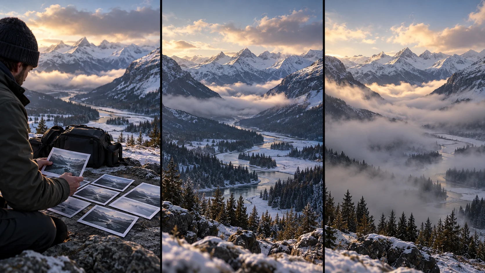

G14 · 중급 · 일반 드론
스위스 알프스: 구름과 안개를 잇는 하이퍼랩스
사진 처리와 시퀀스 안정화를 분리하고 움직이는 안개와 고정 지형을 각각 평가한다.
그림에서 확인할 세 가지수집·정리·안정화가 시간 압축 영상을 만든다.
1사진을 검토하는 준비
왼쪽 인물은 바위 옆에서 여러 사진을 들고 있고 배낭이 곁에 놓여 있다. 촬영한 결과에서 어떤 변화가 필요한지 고르는 단계로 읽는다.
2강과 낮은 안개
가운데는 계곡을 굽어 흐르는 강과 그 위에 낮게 놓인 안개가 보인다. 움직이는 안개와 고정된 산을 나누어 볼 기준을 잡는다.
3계곡을 더 덮은 안개
오른쪽은 안개가 넓어져 아래쪽 강 일부가 가려진다. 산의 윤곽을 공통 기준으로 두고 시간 변화가 새로 만들거나 감춘 정보를 비교한다.
원리를 설명하는 가상 학습 장면
촬영 설계
촬영을 이렇게 설계한다
수집 단위를 이해한다
소개 본문은 26회 드론 비행으로 겨울 산의 구름과 안개를 담았다고 설명한다. 공개 정보는 작품의 수집 규모를 알려 주지만 각 비행의 경로나 최종 채택 컷 수까지 밝히지는 않는다.
사진 처리와 안정화를 나눈다
제작자에게 받은 설명에는 RAW 사진을 LRTimelapse와 Lightroom으로 처리한 뒤 편집 도구의 Warp Stabilizer를 사용한 순서가 나온다. 색과 정렬 문제를 각각 다루는 과정이다.
교육 적용 · 고정점을 고른다
능선과 바위를 기준으로 불필요한 화면 흔들림을 확인하고 안개의 변화는 유지한다. 안정화가 지형을 찌그러뜨리면 효과를 강하게 적용하기보다 구간 선택과 크롭 여유를 다시 검토한다.
스위스 슈비츠 인근 겨울 산에서 구름과 안개의 흐름을 시간 압축으로 담은 작품이다.
원본 영상스위스 알프스: 구름과 안개를 잇는 하이퍼랩스
1. 고정 지형
능선의 위치가 불필요하게 흔들리는지 본다. 안개 움직임과 카메라 흔들림을 구별하는 기준이다.
2. 시간의 변화
안개의 이동이 장면의 핵심인지 본다. 시점 이동이 그 변화를 가리는지 판단한다.
3. 후반의 손실
화면 가장자리와 지형 형태를 본다. 안정화로 얻은 매끄러움과 잃은 정보량을 함께 평가한다.
재생이 제한되면 원본 영상 새 창을 이용하세요.
제작진 설명 · 한국어 요약 번역
산악 촬영의 사진을 처리하고 안정화하다
원본 촬영
Time Lapse Network는 Oliver Schmid가 제공한 설명을 싣고, 겨울 산악 영상을 26회 비행의 RAW 사진으로 만들었다고 소개한다.
후반 순서
제작자는 LRTimelapse와 Lightroom으로 먼저 처리한 뒤 After Effects 또는 Premiere Pro에서 안정화했다고 밝혔다.
적용 범위
글에 적힌 비행 시간과 사진 간격은 당시 조건의 경험값이며 현장 운용 기준으로 일반화하지 않는다.
Kling 프롬프트단문 인과 체인 · 16:9
내가 직접 만들어 본다
드론을 고정하면 산은 제자리에 있고 변하는 것은 안개뿐이라, 고정점과 변화를 분리해 읽게 지시한다.
한계 · 여러 번 비행해 모은 RAW 사진 처리와 후반 안정화는 영상으로 확인할 수 없고, 고정된 시점에서 안개만 변하는 결과만 보인다.
- S01겨울 계곡에 강이 굽어 흐른다.
- S02강 위로 낮은 안개가 놓여 있다.
- S03영상은 하나의 연속 쇼트다.
- S04처음 10초 동안 드론은 한 자리에 흔들림 없이 떠 있다.
- S05드론이 흔들리지 않아서 산의 능선은 화면에 고정된다.
- S06능선이 고정되어 있어서 변하는 것은 안개뿐이다.
- S07다음 10초 동안 안개가 계곡 아래에서 천천히 올라온다.
- S08안개가 올라오자 강의 일부가 흰 막 아래로 가려진다.
- S09마지막 10초 동안 안개가 계곡 전체로 넓어진다.
- S10안개가 넓어져도 산의 윤곽은 같은 자리에 남는다.
- S11그 결과 시간의 변화는 안개의 움직임으로만 읽힌다.
[네거티브]
- 강이 직선 수로처럼 곧게 놓이는 것 금지
- 안개가 하늘 높이 떠 산을 가리는 것 금지
- 영상 중간에 컷이 들어가 장면이 끊기는 것 금지
- 드론이 좌우로 흔들리며 위치가 떠도는 것 금지
- 능선이 화면에서 출렁이며 일그러지는 것 금지
- 능선과 안개가 함께 흘러가는 것 금지
- 안개가 위에서 아래로 쏟아지듯 내려오는 것 금지
- 강이 처음부터 완전히 가려져 있는 것 금지
- 안개가 한꺼번에 계곡을 삼켜 버리는 것 금지
- 산의 윤곽이 안개와 함께 뭉개지는 것 금지
- 산 모양이 바뀌어 시간 변화가 뒤섞이는 것 금지
결과에서 볼 것
- 산의 능선이 끝까지 같은 자리에 있었는가
- 안개가 올라오며 강 일부를 가렸는가
- 변화가 안개의 움직임으로만 읽혔는가
프롬프트 설계안이다. Kling에서 실제로 생성해 보기 전에는 결과를 보장하지 않는다. 길이와 모드는 Kling 화면에서 확인해 고른다. 이미지에서 영상으로 만들 때는 첫 프레임 이미지를 실제 입력으로 넣는다.